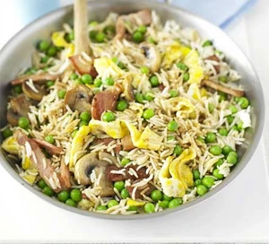

Fried rice

Our egg-fried rice recipe with peas, bacon and mushrooms is a great way to use leftovers. Ready in under 15 minutes, it makes a super-speedy one-pan supper
Ingredients
-
2 tsp oil
-
2 rashers bacon , chopped
- 1 egg , beaten
- 1 egg , beaten
- 250g cooked basmati rice
Method
-
Heat the oil in a frying pan, then tip in the egg. Leave to set for 30 secs-1 min, swirling every now and again, then tip it out and finely slice. Add the bacon and mushrooms to pan, then fry until golden, about 3 mins. Add the peas, garlic and ginger, then cook for 1 min.
- Mix the soy sauce and sugar together. Turn up the heat, add the cooked rice to the pan, heat through, then splash in the sweet soy sauce. Stir through the egg and serve straight away, with more soy sauce if you like.